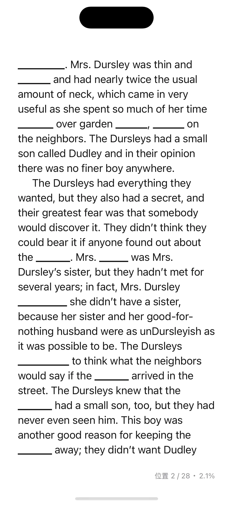
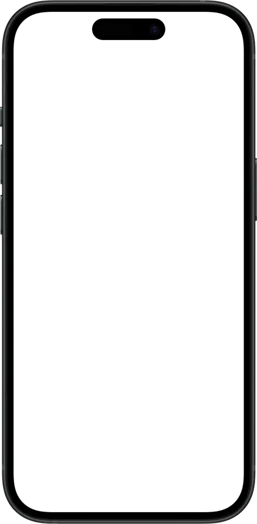
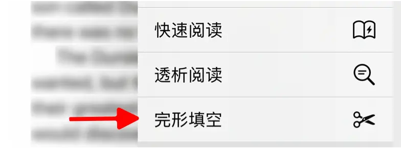

完形填空会将您在书中添加的学习内容或生词表中的单词进行遮盖。阅读时遇到被遮盖的词汇，先根据上下文推断其含义，再点击查看答案——这种”主动回忆”的方式能有效帮助您在真实语境中巩固词汇记忆。


使用限制
本功能支持文本和 PDF 格式的书籍。PDF 格式需要听阅版本 8.10.03 或更高版本。
如何开启
- 打开您想要阅读的电子书。
- 点击屏幕顶部菜单栏的 进入完形填空设置页面。
- 如果顶部菜单栏没有此图标，请点按
 ，然后选择”完形填空”。
，然后选择”完形填空”。
- 如果顶部菜单栏没有此图标，请点按
- 打开开关，激活完形填空功能。
选项说明
- 仅当前书籍添加的学习：只遮盖在当前书籍中添加的学习内容。
- 生词表中的词汇：同时遮盖生词表中包含的单词。
使用场景
完形填空非常适合在继续阅读时复习已学词汇，让词汇学习从被动记忆转向主动运用。
使用步骤
- 开启功能：选择要遮盖的词汇来源（当前书籍的学习内容或生词表）。
- 主动回忆：阅读时遇到被遮盖的单词，先不要急于查看答案。尝试根据上下文推测这个词的含义和用法，这个过程会激活您的记忆。
- 验证理解：点击遮盖区域查看答案，对比自己的推测与实际词汇。如果不同，思考原因——是词汇不熟悉，还是对上下文的理解有偏差？
- 反复强化：同一个词汇可能在书中多次出现并被遮盖，每次遇到都是一次巩固机会。在不同语境中反复接触，可以帮您建立更全面的词汇理解。
使用建议
- 建议先从您已经基本掌握的书籍开始练习，避免过多生词影响阅读体验。
- 遮盖词汇数量不宜过多，控制在全书词汇量的 5%-10% 为宜。
- 如果某个词汇反复回忆不起来，可以将其标记为重点复习对象。